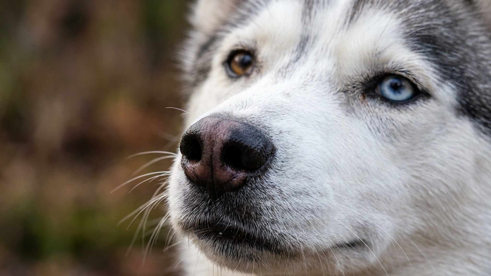

Знакомый говорит «хаски» и показывает фото маламута — это случается постоянно. Но это разные собаки: аляскинский маламут крупнее, тяжелее и спокойнее, он создавался не для гонок, а для перетаскивания тяжёлых нарт на дальние расстояния. Разница в характере, нагрузке и быте — принципиальная. Ниже — честный портрет породы, который поможет решить, ваш это пёс или нет.
Сибирский хаски — поджарый спринтер для скоростных упряжек. Аляскинский маламут — тяжеловоз: весит 35–45 кг (против 20–27 у хаски), кость шире, шея мощнее, темп движения размеренный. Оба северные, оба с двойной шерстью — но на этом сходство заканчивается.
Маламут — порода с сильным собственным мнением. Он не агрессивен, но и не угодлив. Дрессируется при последовательной работе и мотивации, однако принуждение и монотонные повторения закрывают его полностью.
🐾 У вас аляскинский маламут?
AnimaLife соберёт уход под породу: к каким болезням есть склонность, что проверять по возрасту, чем кормить и когда пора к врачу. Бесплатно, прямо в мессенджере.
Собрать план ухода → Собрать в MAX →
У вас iPhone? AnimaLife есть в App Store
Это рабочая порода с настоящим «мотором». Без достаточной нагрузки маламут разрушает всё, до чего дотянется, копает ямы до Китая и ищет способы выбраться с любой территории.
Аляскинский маламут — порода не для городской квартиры как единственного пространства и не для владельца, который ждёт послушного компаньона без усилий.
🐾 Ваш питомец — аляскинский маламут?
Заведите профиль в AnimaLife: приложение запомнит породу, возраст и вес и будет подсказывать по уходу именно для неё. Вопросы AI-ветеринару — круглосуточно и бесплатно.
Завести профиль → Завести в MAX →
У вас iPhone? AnimaLife есть в App Store
🐾 Понравился разбор?
Подпишитесь на канал — каждый день разбираем по одному тревожному симптому у кошек и собак: что в пределах нормы, а когда пора к врачу. Подпишитесь, чтобы не пропустить разбор, который может спасти здоровье вашего питомца.
Материал носит информационный характер и не заменяет очную консультацию ветеринара.